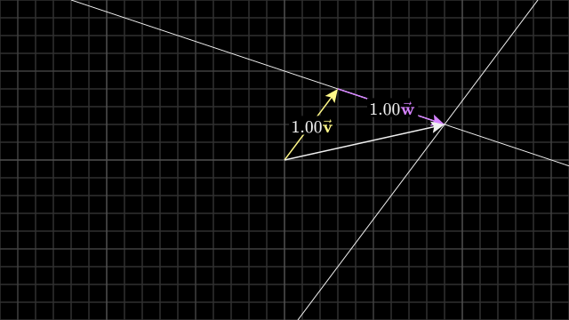
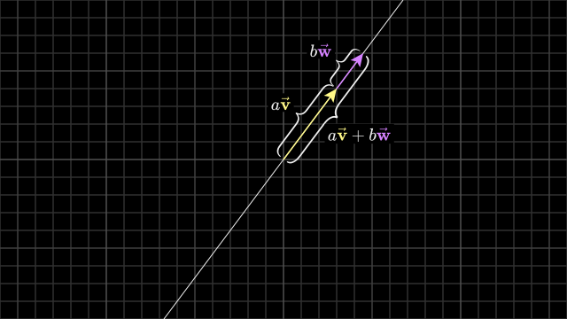
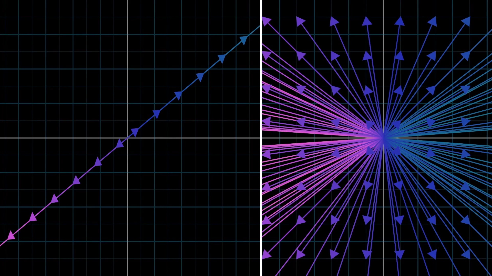
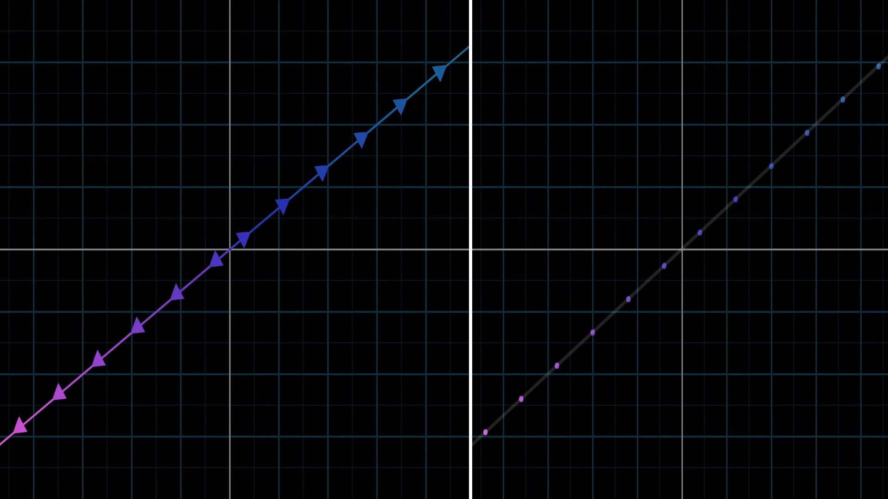
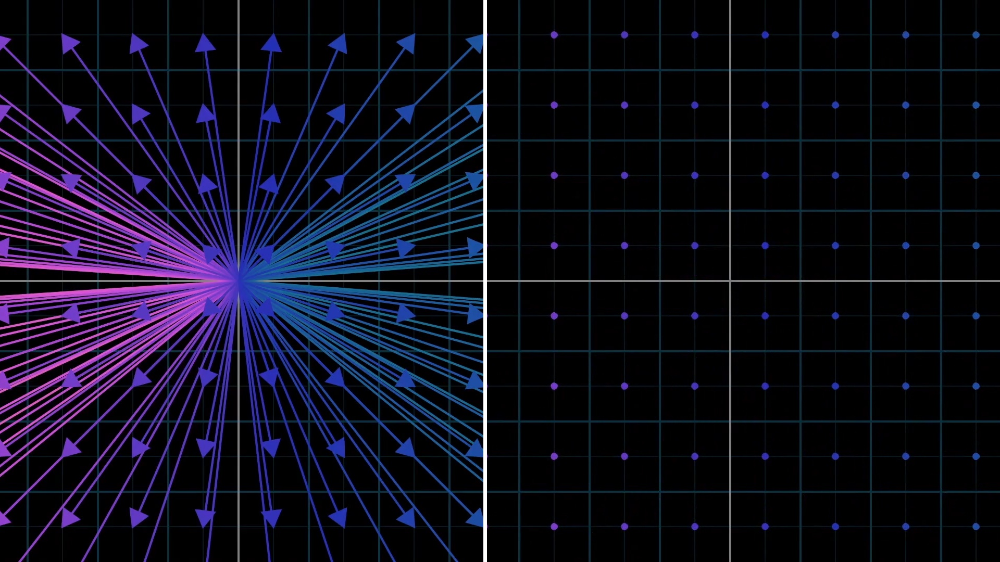
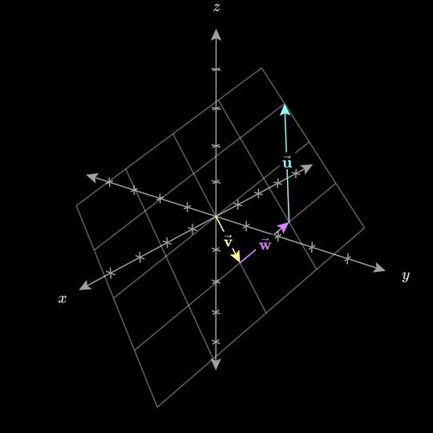
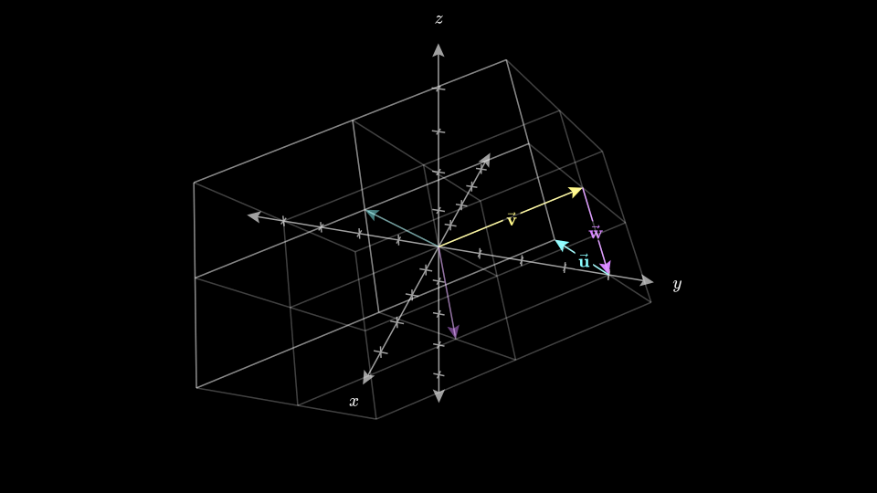

গত অধ্যায়ে আমরা ভেক্টর যোগ ও স্কেলার গুণনের পাশাপাশি ভেক্টরের স্থানাঙ্ক নিয়ে আলোচনা করেছি, যেখানে সংখ্যার জোড়া এবং দ্বিমাত্রিক ভেক্টরের মধ্যে পারস্পরিক রূপান্তর ঘটে।
আপনারা হয়তো অনেকেই আগে থেকেই ভেক্টরের স্থানাঙ্কের সাথে পরিচিত। কিন্তু এই স্থানাঙ্কগুলো নিয়ে ভাবার আরেকটি দারুণ ও আকর্ষণীয় উপায় আছে — যা লিনিয়ার অ্যালজেব্রার জন্য অত্যন্ত কেন্দ্রীয়। যখন কোনো ভেক্টরকে প্রকাশ করতে $(3, -2)$-এর মতো একটি সংখ্যার জোড়া দেখেন, তখন প্রতিটি স্থানাঙ্ককে একটি স্কেলার হিসেবে চিন্তা করুন — অর্থাৎ ভাবুন কীভাবে প্রতিটি সংখ্যা ভেক্টরকে প্রসারিত (stretch) বা সংকুচিত (squish) করছে।
দ্বিমাত্রিক $xy$-স্থানাঙ্ক ব্যবস্থায় দুটি বিশেষ ভেক্টর রয়েছে। একটি ভেক্টর ডানদিকে নির্দেশ করে এবং এর দৈর্ঘ্য $1$, যাকে সাধারণত "আই হ্যাট" ($\hat{i}$) অথবা "$x$-অক্ষ বরাবর একক ভেক্টর" বলা হয়। অপরটি সরাসরি উপরের দিকে নির্দেশ করে এবং এর দৈর্ঘ্যও $1$, যাকে সাধারণত "জে হ্যাট" ($\hat{j}$) অথবা "$y$-অক্ষ বরাবর একক ভেক্টর" বলা হয়।
এখন, $x$-স্থানাঙ্কটিকে এমন একটি স্কেলার হিসেবে ভাবুন যা $\hat{i}$-কে স্কেল করে ৩ গুণ প্রসারিত করে। আর $y$-স্থানাঙ্কটিকে ভাবুন এমন একটি স্কেলার যা $\hat{j}$-কে উল্টে দেয় এবং ২ গুণ প্রসারিত করে। এই অর্থে, স্থানাঙ্কগুলো যে ভেক্টরকে নির্দেশ করছে, তা আসলে দুটি স্কেল করা ভেক্টরের যোগফল ছাড়া আর কিছুই নয়!
দুটি স্কেল করা ভেক্টর যোগ করার এই ধারণাটি একটি আশ্চর্যজনকভাবে গুরুত্বপূর্ণ মৌলিক ভিত্তি। এই দুটি ভেক্টর $\hat{i}$ এবং $\hat{j}$-এর একটি বিশেষ নাম রয়েছে: একত্রে এদের বলা হয় স্থানাঙ্ক ব্যবস্থার "ভিত্তি" (Basis)। এর সহজ অর্থ হলো, যখন স্থানাঙ্কগুলোকে স্কেলার ভাবছেন, তখন ভিত্তি ভেক্টরগুলোই হলো সেই উপাদান যা এই স্কেলারগুলো দ্বারা আসলে স্কেল হচ্ছে।
ভিত্তির একটি আরও আনুষ্ঠানিক ও গাণিতিক সংজ্ঞাও রয়েছে, যা আমরা এই অধ্যায়ের শেষের দিকে দেখব। তবে আমাদের পরিচিত স্থানাঙ্ক ব্যবস্থাকে এই দুটি ভিত্তি ভেক্টরের মাধ্যমে দেখা একটি সূক্ষ্ম ও অসাধারণ প্রশ্নের জন্ম দেয়: আমরা যদি $\hat{i}$ ও $\hat{j}$-এর পরিবর্তে সম্পূর্ণ ভিন্ন এক জোড়া ভিত্তি ভেক্টর বেছে নিই, তবে কি সম্পূর্ণ গ্রহণযোগ্য একটি নতুন স্থানাঙ্ক ব্যবস্থা পাওয়া সম্ভব?
ভিন্ন ভিত্তি ভেক্টর নির্বাচন
উদাহরণস্বরূপ, উপরের ডানদিকে নির্দেশ করা একটি ভেক্টর নিন, এবং সাথে নিচের ডানদিকে নির্দেশ করা আরেকটি ভেক্টর নিন।
এক মুহূর্ত ভাবুন: দুটি স্কেলার বেছে নিয়ে, প্রতিটির সাহায্যে একটি করে ভেক্টরকে স্কেল করে, তারপর তাদের যোগ করে আপনি কত রকমের ভিন্ন ভেক্টর তৈরি করতে পারবেন? স্কেলারের মান পরিবর্তন করে আপনি দ্বিমাত্রিক স্থানের কোন কোন ভেক্টরে পৌঁছাতে সক্ষম হবেন?
উত্তর হলো: এই দুটি ভেক্টরের ক্ষেত্রে, আপনি এইভাবে সম্ভাব্য প্রতিটি দ্বিমাত্রিক ভেক্টরকেই তৈরি করতে পারবেন! কেন এটি সম্ভব, তা নিয়ে চিন্তা করা একটি অসাধারণ ধাঁধা। এই নতুন এক জোড়া ভিত্তি ভেক্টরও আপনাকে সংখ্যার জোড়া এবং দ্বিমাত্রিক ভেক্টরের মাঝে আসা-যাওয়ার একটি নিখুঁত মাধ্যম দেয়, তবে এর সংযোগটি প্রমিত ভিত্তি $\hat{i}$ এবং $\hat{j}$-এর সংযোগের চেয়ে অবশ্যই সম্পূর্ণ ভিন্ন।
পরবর্তী অধ্যায়গুলোতে আমরা এই বিষয়টি আরও বিশদভাবে দেখব এবং বিভিন্ন স্থানাঙ্ক ব্যবস্থার মধ্যকার সম্পর্ক ব্যাখ্যা করব। তবে আপাতত আমরা শুধু চাই আপনারা উপলব্ধি করুন যে — সংখ্যা দিয়ে ভেক্টর প্রকাশ করার যেকোনো পদ্ধতিই আসলে আপনার ভিত্তি ভেক্টর নির্বাচনের ওপর পুরোপুরি নির্ভরশীল।
যদি আমাদের কাছে দুটি ভেক্টর $\vec{v}$ ও $\vec{w}$ থাকে এবং আমরা তাদের যেকোনো স্কেলার $a$ ও $b$ দিয়ে গুণ করে যোগ করি, তাহলে পাই:
এই অপারেশনকে বলা হয় রৈখিক সমন্বয় (Linear Combination)। "রৈখিক" শব্দটি এসেছে কারণ আমরা শুধু স্কেলিং ও যোগ ব্যবহার করছি — কোনো ঘাত, সাইন বা অন্য অরৈখিক অপারেশন নেই।
সুতরাং দুটি ভেক্টরের রৈখিক সমন্বয় মূলত এই দুটি অসীম রেখাকে একত্রিত করার একটি পদ্ধতি। বেশিরভাগ ভেক্টর জোড়ার ক্ষেত্রে, আপনি যদি উভয় স্কেলারকে মুক্তভাবে বিচরণ করতে দেন এবং সম্ভাব্য প্রতিটি ভেক্টর বিবেচনা করেন, তবে আপনি সমতলের প্রতিটি সম্ভাব্য বিন্দুতে পৌঁছাতে সক্ষম হবেন। প্রতিটি দ্বিমাত্রিক ভেক্টরই তখন আপনার নাগালের মধ্যে চলে আসবে।

কিন্তু যদি আপনার মূল ভেক্টর দুটি কাকতালীয়ভাবে একই রেখায় অবস্থিত হয় (সমান্তরাল), তবে স্কেলার গুণনের মাধ্যমে উৎপন্ন রেখা দুটি একই সরলরেখা হয়ে যাবে। ফলে তাদের যোগফল কখনোই সেই রেখার বাইরের কোনো ভেক্টর তৈরি করতে পারবে না।

এছাড়া আরেকটি তৃতীয় সম্ভাবনাও রয়েছে: আপনার ভেক্টর দুটিই যদি শূন্য ভেক্টর $\vec{0}$ হয়, তবে আপনি চিরতরে মূলবিন্দুতেই আটকে থাকবেন।
দুটি ভেক্টর $\vec{v}$ ও $\vec{w}$-এর সমস্ত সম্ভাব্য রৈখিক সমন্বয় মিলে যে সেট তৈরি হয়, তাকে বলে তাদের স্প্যান (Span)। এই পরিভাষা দিয়ে যদি আমরা আগের অংশটিকে নতুন করে বলি: বেশিরভাগ দ্বিমাত্রিক ভেক্টর জোড়ার স্প্যান হলো পুরো দ্বিমাত্রিক স্পেসের সমস্ত ভেক্টর; কিন্তু যখন তারা কাকতালীয়ভাবে একই রেখায় অবস্থিত হয়, তখন তাদের স্প্যান হলো কেবল সেই রেখার ওপর শীর্ষবিন্দু থাকা ভেক্টরগুলো।
মনে আছে আমরা কীভাবে বলেছিলাম লিনিয়ার বীজগণিত ভেক্টর যোগ এবং স্কেলার গুণনের চারপাশে ঘোরে? দুটি ভেক্টরের স্প্যান মূলত একটি প্রশ্ন করার চমৎকার উপায়: কেবল ভেক্টর যোগ এবং স্কেলার গুণনের এই মৌলিক অপারেশন দুটি ব্যবহার করে আপনি কোন কোন সম্ভাব্য ভেক্টরে পৌঁছাতে সক্ষম?
স্প্যান ধারণাটি একটি মাত্র ভেক্টরের জন্যও প্রযোজ্য। একটি অশূন্য ভেক্টর $\vec{v}$-এর স্প্যান হলো তার ভেতর দিয়ে যাওয়া সম্পূর্ণ সরলরেখা: $\{a\vec{v} \mid a \in \mathbb{R}\}$।
ভেক্টর বনাম বিন্দু
মানুষ কীভাবে সাধারণত ভেক্টরকে বিন্দু হিসেবে চিন্তা করে, তা নিয়ে কথা বলার জন্য এটি একটি উপযুক্ত সময়। একটি সরলরেখার ওপর রাখা ভেক্টরের বিশাল সংগ্রহ নিয়ে ভাবাটা ভীষণ ঘিঞ্জি ও জটিল মনে হয়; আর সমতল পূর্ণ করে ফেলা সমস্ত দ্বিমাত্রিক ভেক্টরকে একসাথে ভাবতে গেলে পরিস্থিতি আরও বেশি জটিল ও বিশৃঙ্খল হয়ে ওঠে।

তাই যখন ভেক্টরের এই ধরনের সংগ্রহ নিয়ে কাজ করা হয়, তখন স্থানটিতে প্রতিটি ভেক্টরকে কেবল তার শীর্ষবিন্দু (tip) দ্বারা একটি বিন্দু হিসেবে উপস্থাপন করাটা প্রচলিত নিয়ম। এভাবে আপনি যদি কোনো নির্দিষ্ট সরলরেখার ওপর শীর্ষবিন্দু থাকা প্রতিটি সম্ভাব্য ভেক্টর নিয়ে ভাবতে চান, তবে আপনাকে শুধু সেই রেখাটি নিয়ে ভাবলেই চলে।

একইভাবে, সমস্ত সম্ভাব্য দ্বিমাত্রিক ভেক্টর নিয়ে ভাবতে প্রতিটি ভেক্টরকে তার শীর্ষবিন্দুর অবস্থান হিসেবে কল্পনা করুন। তারপর তাদের সবাইকে একসাথে ভাবতে তীরচিহ্নগুলোকে বাদ দিয়ে কেবল অসীম সমতল চাদরটি কল্পনা করলেই চলবে — যা মূলত দ্বিমাত্রিক স্থান।

সাধারণত, আপনি যখন একটি একক ভেক্টর নিয়ে ভাবছেন, তখন তাকে একটি তীর (arrow) হিসেবে চিন্তা করুন; আর যখন ভেক্টরের কোনো সম্পূর্ণ সংগ্রহ বা গোষ্ঠী নিয়ে ভাবছেন, তখন তাদের বিন্দু (points) হিসেবে চিন্তা করাটাই সবচেয়ে সুবিধাজনক ও পরিষ্কার।
ত্রিমাত্রিক স্থানে স্প্যান (Span in 3D)
আমরা যখন ত্রিমাত্রিক স্থানে ভেক্টর নিয়ে ভাবতে শুরু করি, তখন স্প্যানের ধারণাটি আরও বেশি চমকপ্রদ ও গভীর হয়ে ওঠে। উদাহরণস্বরূপ, আপনি যদি ত্রিমাত্রিক স্থানে দুটি ভেক্টর নেন যা একই দিকে নির্দেশ করছে না (অ-সমান্তরাল), তবে তাদের স্প্যান বলতে আসলে কী বোঝায়?
তাদের স্প্যান হলো ওই দুটি ভেক্টরের সম্ভাব্য সমস্ত রৈখিক সমন্বয়ের সেট। অর্থাৎ, আপনি শুরুতে যে দুটি ভেক্টর নিয়েছেন তাদের প্রতিটিকে যেকোনো উপায়ে স্কেল করে যোগ করার মাধ্যমে যেসব ভেক্টর তৈরি করতে পারবেন, তাদের সম্মিলিত সংগ্রহই হলো এদের স্প্যান।
আপনি কল্পনা করতে পারেন দুটি নব বা ডায়াল ঘুরিয়ে রৈখিক সমন্বয়ের স্কেলার দুটির মান বদলাচ্ছেন, স্কেল করা ভেক্টরগুলোকে যোগ করছেন এবং ফলাফল হিসেবে পাওয়া ভেক্টরের শীর্ষবিন্দুকে লক্ষ্য করছেন। সেই শীর্ষবিন্দুটি ত্রিমাত্রিক স্থানের মূলবিন্দুগামী একটি সমতল পাতলা চাদর খোদাই করে তৈরি করে।

এই সমতল চাদরটিই হলো ওই দুটি ভেক্টরের স্প্যান। আরও স্পষ্টভাবে বললে, যেসব ভেক্টরের শীর্ষবিন্দু এই সমতল চাদরে অবস্থান করে, তাদের সম্পূর্ণ সেটটিই হলো এই দুটি ভেক্টরের স্প্যান। ভাবতেই কী অপূর্ব এক মানসিক চিত্র, তাই না?
এখন যদি আমরা এর সাথে একটি তৃতীয় ভেক্টর যুক্ত করি, এবং তিনটি ভেক্টরের সম্মিলিত স্প্যান বিবেচনা করি, তবে কী ঘটবে? তিনটি ভেক্টরের রৈখিক সমন্বয় দুটি ভেক্টরের মতোই সংজ্ঞায়িত: তিনটি স্কেলার বেছে নিন, সেগুলো দিয়ে প্রতিটি ভেক্টরকে স্কেল করুন, তারপর তাদের যোগ করুন। আর পুনরায়, এদের স্প্যান হলো সম্ভাব্য সব রৈখিক সমন্বয়ের সেট।
যখন আমরা একটি তৃতীয় ভেক্টর যোগ করি, তখন দুটি ভিন্ন ঘটনা ঘটতে পারে:
১. আপনার তৃতীয় ভেক্টরটি যদি কাকতালীয়ভাবে প্রথম দুটি ভেক্টরের স্প্যান করা সমতলের ওপরই অবস্থান করে, তবে স্প্যানের কোনো পরিবর্তন হবে না — আপনি এক অর্থে সেই একই সমতল চাদরেই বন্দি রয়ে যাবেন। অন্য কথায়, প্রথম দুটির রৈখিক সমন্বয়ের সাথে তৃতীয় ভেক্টরের কোনো স্কেল করা সংস্করণ যোগ করলেও আপনি নতুন কোনো ভেক্টরে পৌঁছানোর সুযোগ পাবেন না।

২. আর আপনি যদি এলোমেলোভাবে যেকোনো একটি তৃতীয় ভেক্টর বেছে নেন, তবে এটি প্রায় নিশ্চিতভাবেই প্রথম দুটির সমতলে অবস্থান করবে না। যেহেতু এটি একটি সম্পূর্ণ স্বতন্ত্র দিকে মুখ করে আছে, তাই এটি সম্ভাব্য প্রতিটি ত্রিমাত্রিক ভেক্টরের প্রবেশদ্বার খুলে দেয়! এটি ভাবার সেরা উপায় হলো: আপনি নতুন তৃতীয় ভেক্টরটিকে স্কেল করার সাথে সাথে এটি প্রথম দুটি ভেক্টরের স্প্যান করা সমতলকে পুরো ত্রিমাত্রিক স্থানজুড়ে ঝাড়ু দিয়ে (sweep) সমস্ত স্থান পূর্ণ করে ফেলে।

এটি মূলত স্থানের তিনটি পূর্ণ মাত্রা অর্জন করতে আপনার হাতের তিনটি মুক্তভাবে পরিবর্তনশীল স্কেলারের পূর্ণ সদ্ব্যবহার করার মতো।
তৃতীয় ভেক্টরটি প্রথম দুটির স্প্যানের ওপর থাকুক, অথবা দুটি ভেক্টরই কাকতালীয়ভাবে একই রেখায় থাকুক —এই দুই ক্ষেত্রে আমরা বলি অন্তত একটি ভেক্টর অতিরিক্ত বা অপ্রয়োজনীয়, কারণ এটি স্প্যানে কিছুই যোগ করছে না। যখন একাধিক ভেক্টর নিয়ে কাজ করি এবং কোনোটিকে বাদ দিলেও স্প্যান একই থাকে, তখন তাদের বলা হয় রৈখিকভাবে নির্ভরশীল (linearly dependent)। অন্য ভাষায়, একটি ভেক্টরকে অন্যগুলোর রৈখিক সমন্বয় হিসেবে প্রকাশ করা যায় — অর্থাৎ সেটি আগেই বাকিদের স্প্যানের ভেতরে আছে।
এই ধারণাগুলো থেকে দুটি গুরুত্বপূর্ণ পরিভাষা তৈরি হয়:
ভেক্টরগুলো রৈখিকভাবে নির্ভরশীল যদি অন্তত একটি ভেক্টরকে বাকিগুলোর রৈখিক সমন্বয় হিসেবে প্রকাশ করা যায়। অর্থাৎ, সেই ভেক্টরটি বাদ দিলেও স্প্যানের কোনো পরিবর্তন হয় না।
গাণিতিকভাবে: অন্তত একটি অশূন্য $(c_1, c_2, \ldots)$ বিদ্যমান যেখানে $c_1\vec{v}_1 + c_2\vec{v}_2 + \cdots = \vec{0}$।
ভেক্টরগুলো রৈখিকভাবে স্বাধীন যদি প্রতিটি ভেক্টর একটি সত্যিকারের নতুন মাত্রা যোগ করে। কোনো ভেক্টরকেই বাকিগুলোর রৈখিক সমন্বয় হিসেবে প্রকাশ করা সম্ভব নয়।
গাণিতিকভাবে: $c_1\vec{v}_1 + c_2\vec{v}_2 + \cdots = \vec{0}$ হতে পারে কেবল যখন $c_1 = c_2 = \cdots = 0$।
একটি ভেক্টর স্পেসের ভিত্তি হলো রৈখিকভাবে স্বাধীন ভেক্টরের এমন একটি সেট, যার স্প্যান সমগ্র স্থানটি।
দুটি ভেক্টর $\vec{v} = \begin{bmatrix}0\\3\\2\end{bmatrix}$ ও $\vec{w} = \begin{bmatrix}0\\1\\-2\end{bmatrix}$-এর স্প্যান নিচের চিত্রে দেখানো হয়েছে। এই স্প্যানের ভেতরে কোন ভেক্টরটি অবস্থান করছে?
প্রশ্ন: কোনো স্পেসের ভিত্তির কারিগরি সংজ্ঞা হলো রৈখিকভাবে স্বাধীন ভেক্টরের এমন একটি সেট যা ওই স্পেসকে স্প্যান করে। আগে আমরা ভিত্তি যেভাবে বর্ণনা করেছি, এবং স্প্যান ও রৈখিক স্বাধীনতা শব্দদ্বয় সম্পর্কে আপনার বোঝাপড়া দিয়ে এই সংজ্ঞাটি কেন যুক্তিযুক্ত?
উত্তর: কারণ প্রতিটি ভেক্টর রৈখিকভাবে স্বাধীন হলে কোনোটিই অপ্রয়োজনীয় থাকে না — প্রত্যেকেই স্প্যানে একটি নতুন মাত্রা যোগ করে। আবার ওই সেটের স্প্যান পুরো স্পেস হলে যেকোনো ভেক্টরকে এদের রৈখিক সমন্বয় হিসেবে প্রকাশ করা যায়। অর্থাৎ এই সেটটি কোনো অতিরিক্ত ভেক্টর ছাড়াই পুরো স্পেসকে সম্পূর্ণরূপে বর্ণনা করে — ঠিক যেমন আই হ্যাট ও জে হ্যাট টুডি স্থানের ক্ষেত্রে করে।
নিচের লম্ব ভিত্তি চিত্রে দুটি পরস্পর-লম্ব ভেক্টর দেখা যাচ্ছে। এদের রৈখিক সমন্বয় দিয়ে $\begin{bmatrix}7\\4\end{bmatrix}$ তৈরি করতে কী স্কেলার দরকার?
পরবর্তী অধ্যায়ে আমরা ম্যাট্রিক্স এবং স্পেসের রূপান্তর নিয়ে কাজ করব। দেখা হবে সেখানে!
নিচের কোঅর্ডিনেট সমতলে লাল ভেক্টরের শীর্ষবিন্দুটি টেনে যেকোনো অবস্থানে নিন। স্কেলার স্লাইডার ঘুরিয়ে ভেক্টরটিকে প্রসারিত, সংকুচিত বা দিক উল্টে দিন — রিয়েল-টাইমে স্থানাঙ্ক, দৈর্ঘ্য ও দিক কোণ আপডেট হবে। দ্বিতীয় ল্যাবে দেখুন কীভাবে আই হ্যাট ও জে হ্যাট যেকোনো ভেক্টরকে তার উপাংশে ভেঙে ফেলে।
এক্স কমা ওয়াই ইনপুট দিন অথবা প্রিসেটে ক্লিক করে পর্যবেক্ষণ করুন কীভাবে ভিত্তি ভেক্টরগুলো যেকোনো ভেক্টর নির্মাণ করে।